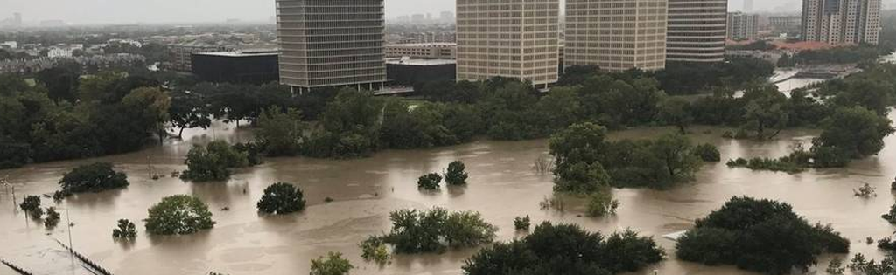

Demystifying Flood Insurance – Understanding Flood Insurance
Who Provides Flood Insurance?There are two primary actors who provide flood insurance.
How is premium calculated?
The NFIP has specific rating structure that is made available to the public. The main criteria is the zone the building is in, the type of building (whether there is a basement) and the buildings Base Flood Elevation (BFE) measurement. BFE shows how the water is predicted to rise during a flood event compared to the elevation of the building. In critical flood zones, the NFIP requires an elevation certificate (issued by a surveyor or engineer stating buildings various elevations to sea level).
Private Market insurers have proprietary modeling, but in general they all look to calculate their exposure to flooding using historical flooding data, elevation data, trends, building resiliency measures and are not limited to guidelines that handcuff the NFIP.
Flood Zones
FEMA has specific description of each zone here https://www.fema.gov/flood-zones#. In a nutshell zones B, C and X are your Moderate to Low Risk Areas. Zones A and V are High Risk Areas. If the building is in a zone A or V and has a mortgage, the lender will require flood insurance. It’s important to note flood zones are continuously being remapped and many of the zones in use now are outdated and do not reflect the true risk of flooding. Check your BFE, that’s your key measure of risk.
Grandfathering When FEMA changes zone maps into a High Risk Area, some properties continue to pay rates to the NFIP based on the current Moderate or Low Risk Area map. The rate is “grandfathered.”
Why is the NFIP/FEMA raising flood insurance premiums?
Property owners in low and moderate risk areas were subsidizing the rates for properties in high hazard areas. After Hurricane Katrina, FEMA went into substantial debt (and more so after Sandy, Irma, Harvey) and Congress voted to phase out some of the premium subsidies. The idea was to make property owners pay their fair share of the risk.
Flood Mitigation
For FEMA’s NFIP, there are only a handful mitigation measures that affect insurance premiums: increase building’s elevation; create flood openings on buildings foundation so floodwaters can flow through, filling in a basement or crawl space, and wet flood proofing, as needed; and raising mechanical equipment out of the basement.
NFIP Flood Definitions
-
Actual Cash Value (ACV) The cost to replace an insured item of property at the time of loss, less the value of physical depreciation.
-
Base Flood A flood having a 1% chance of being equaled or exceeded in any given year.
-
Base Flood Depth (BFD) The depth shown on the Flood Insurance Rate Map (FIRM) for Zone AO that indicates the depth of water above highest adjacent grade resulting from a flood that has a 1% chance of equaling or exceeding that level in any given year.
-
Base Flood Elevation (BFE) The elevation of surface water resulting from a flood that has a 1% chance of equaling or exceeding that level in any given year. The BFE is shown on the Flood Insurance Rate Map (FIRM) for zones AE, AH, A1–A30, AR, AR/A, AR/AE, AR/A1– A30, AR/AH, AR/AO, V1–V30 and VE.
-
Coinsurance A penalty imposed on the loss payment unless the amount of insurance carried on the damaged building is at least 80% of its replacement cost or the maximum amount of insurance available for that building under the NFIP, whichever is less. Coinsurance applies only to building coverage under the Residential Condominium Building Association Policy (RCBAP)
-
Crawlspace An under-floor space that has its interior floor area (finished or not) no more than 5 feet below the top of the next-higher floor. Crawlspaces generally have solid foundation walls. See Diagram 8 in the Elevation Certificate Instructions.
-
Dwelling A building designed for use as a residence for no more than 4 families or a single-family unit in building under a condominium form of ownership.
-
Deductible he fixed amount of an insured loss that is the responsibility of the insured and that is incurred before any amounts are paid for the insured loss under the insurance policy.
-
Declarations Page A computer-generated summary of information provided by the prospective policyholder in the application for flood insurance. The declarations page also describes the term of the policy and the limits of coverage and displays the premium and the insurer's name. The declarations page is a part of the flood insurance policy.
-
Elevation Certificates The National Flood Insurance Program (NFIP) Elevation Certificate (EC) (FEMA form 086-0-33) is an administrative tool of the NFIP which is to be used to provide elevation information necessary to ensure compliance with community floodplain management ordinances, to determine the proper insurance premium rate, or support a request for a Letter of Map Amendment (LOMA) or a Letter of Map Amendment based on fill (LOMR-F).
-
Elevated Building A building that has no basement and that has its lowest elevated floor raised above ground level by foundation walls, shear walls, posts, piers, pilings, or columns. Solid (perimeter) foundations walls are not an acceptable means of elevating buildings in V and VE zones.
-
Foundation Walls Masonry walls, poured concrete walls or precast concrete walls, regardless of height, that extend above grade and support the weight of a building.
-
Flood Zone Designations Flood zones are geographic areas that the FEMA has defined according to varying levels of flood risk. These zones are depicted on a community's Flood Insurance Rate Map (FIRM) or Flood Hazard Boundary Map. Each zone reflects the severity or type of flooding in the area. https://snmapmod.snco.us/fmm/document/fema-flood-zone-definitions.pdf
-
Flood Insurance Rate Map (FIRM) Official map of a community on which FEMA has delineated the Special Flood Hazard Areas (SFHAs), the Base Flood Elevations (BFEs) and the risk premium zones applicable to the community
-
Finished (Habitable) Area An enclosed area having more than 20 linear feet of finished interior walls (paneling, etc.) or used for any purpose other than solely for parking of vehicles, building access or storage.
-
Fair Market Value he price that the seller is willing to accept and the buyer is to pay on the open market and in an arm's length transaction.
-
Group Flood Insurance Issued by the NFIP Direct Program in response to a Presidential disaster declaration. Disaster assistance applicants, in exchange for a modest premium, receive a minimum amount of building and/or contents coverage for a 3-year policy period. An applicant may cancel the group policy at any time and secure a regular Standard Flood Insurance Policy (SFIP) through the NFIP.
-
Grandfathering An exemption based on circumstances previously existing. Under NFIP statutory grandfathering, buildings located in Emergency Program communities and Pre-FIRM buildings in the Regular Program are eligible for subsidized flood insurance rates. Under NFIP administrative grandfathering, Post-FIRM buildings in the Regular Program built in compliance with the floodplain management regulations in effect at the start of construction will continue to have favorable rate treatment even though higher Base Flood Elevations (BFEs) or more restrictive, greater risk zone designations result from Flood Insurance Rate Map (FIRM) revisions. Policyholders who have remained loyal customers of the NFIP by maintaining continuous coverage (since coverage was first obtained on the building) are also eligible for administrative grandfathering.
-
Grade Elevation The lowest or highest finished ground level that is immediately adjacent to the walls of the building. Use natural (pre-construction), ground level, if available, for Zone AO and Zone A (without BFE).
-
Improvements and Betterments Fixtures, alterations, installations or additions made or acquired solely at a tenant’s expense and comprising part of an insured building.
-
Lowest Floor Elevation (LFE) The measured distance of a building's lowest floor above the National Geodetic Vertical Datum (NGVD) or other datum specified on the FIRM for that location.
-
Lowest Floor The lowest floor of the lowest enclosed area (including a basement). An unfinished or flood-resistant enclosure, usable solely for parking of vehicles, building access or storage in an area other than a basement area, is not considered a building's lowest floor provided that such enclosure is not built so as to render the structure in violation of requirements.
-
Lowest Adjacent Grade The lowest point of the ground level immediately next to a building.
-
Letter of Map Revision (LOMR) An official amendment to the currently effective FEMA map. It is issued by FEMA and changes flood zones, delineations and elevations
-
Letter of Map Amendment (LOMA) An amendment to the currently effective FEMA map which establishes that a property is not located in a Special Flood Hazard Area (SFHA). A LOMA is issued only by FEMA.
-
Letter of Determination Review (LODR) FEMA's ruling on the determination made by a lender or third party that a borrower's building is in a Special Flood Hazard Area (SFHA). A LODR deals only with the location of a building relative to the SFHA boundary shown on the Flood Insurance Rate Map (FIRM).
CONTACT US
Customer Service: support@insureflood.com
|Sales: sales@insureflood.com
|Claims: claims@insureflood.com
You can also reach out to us by completing the form below